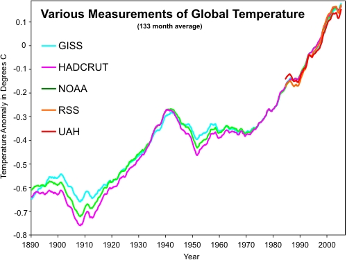
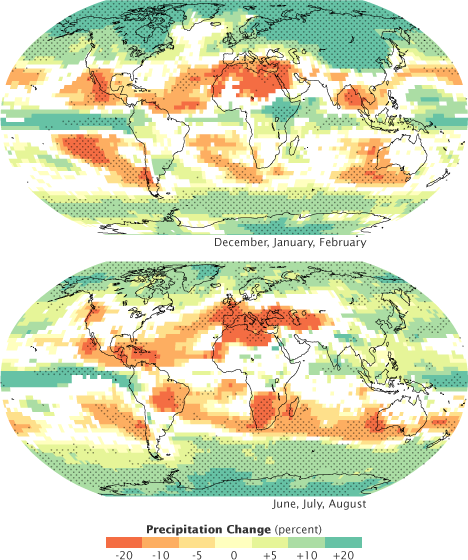
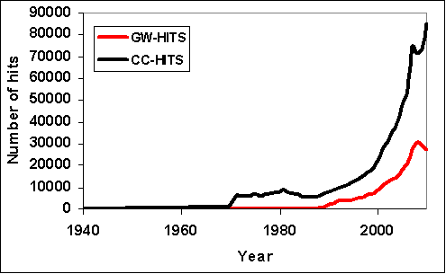

“Climate change” and “global warming” are often used interchangeably but have distinct meanings. Similarly, the terms "weather" and "climate" are sometimes confused, though they refer to events with broadly different spatial- and timescales
Global Warming vs Climate Change
Both of the terms in question are used frequently in the scientific literature, because they refer to two different physical phenomena. As the name suggests, 'global warming' refers to the long-term trend of a rising average global temperature, which you can see here:
'Climate change', again as the name suggests, refers to the changes in the global climate which result from the increasing average global temperature. For example, changes in precipitation patterns, increased prevalence of droughts, heat waves, and other extreme weather, etc. These projections of future global precipitation changes from the 2007 IPCC report are an example of climate change:
Thus while the physical phenomena are causally related, they are not the same thing. Human greenhouse gas emissions are causing global warming, which in turn is causing climate change. However, because the terms are causally related, they are often used interchangeably in normal daily communications.
Both term have Long been used
The argument "they changed the name" suggests that the term 'global warming' was previously the norm, and the widespread use of the term 'climate change' is now. However, this is simply untrue. For example, a seminal climate science work is Gilbert Plass' 1956 study 'The Carbon Dioxide Theory of Climatic Change' (which coincidentally estimated the climate sensitivity to a doubling of atmospheric carbon dioxide at 3.6°C, not far off from today's widely accepted most likely value of 3°C). Barrett and Gast published a letter in Science in 1971 entitled simply 'Climate Change'. The journal 'Climatic Change' was created in 1977 (and is still published today). The IPCC was formed in 1988, and of course the 'CC' is 'climate change', not 'global warming'. There are many, many other examples of the use of the term 'climate change' many decades ago. There is nothing new whatsoever about the usage of the term.
In fact, according to Google Books, the usage of both terms in books published in the United States has increased at similar rates over the past 40 years:

And a Google Scholar search reveals that the term 'climate change' was in use before the term 'global warming', and has always been the more commonly-used term in scientific literature:

No reason to Change the term
Those who perpetuate the "they changed the name" myth generally suggest two reasons for the supposed terminology change. Either because (i) the planet supposedly stopped warming, and thus the term 'global warming' is no longer accurate, or (ii) the term 'climate change' is more frightening.
The first premise is demonstrably wrong, as the first figure above shows the planet is still warming, and is still accumulating heat. Quite simply, global warming has not stopped.
The second premise is also wrong, as demonstrated by perhaps the only individual to actually advocate changing the term from 'global warming' to 'climate change', Republican political strategist Frank Luntz in a controversial memo advising conservative politicians on communicating about the environment:
It’s time for us to start talking about “climate change” instead of global warming and “conservation” instead of preservation.
“Climate change” is less frightening than “global warming”. As one focus group participant noted, climate change “sounds like you’re going from Pittsburgh to Fort Lauderdale.” While global warming has catastrophic connotations attached to it, climate change suggests a more controllable and less emotional challenge.